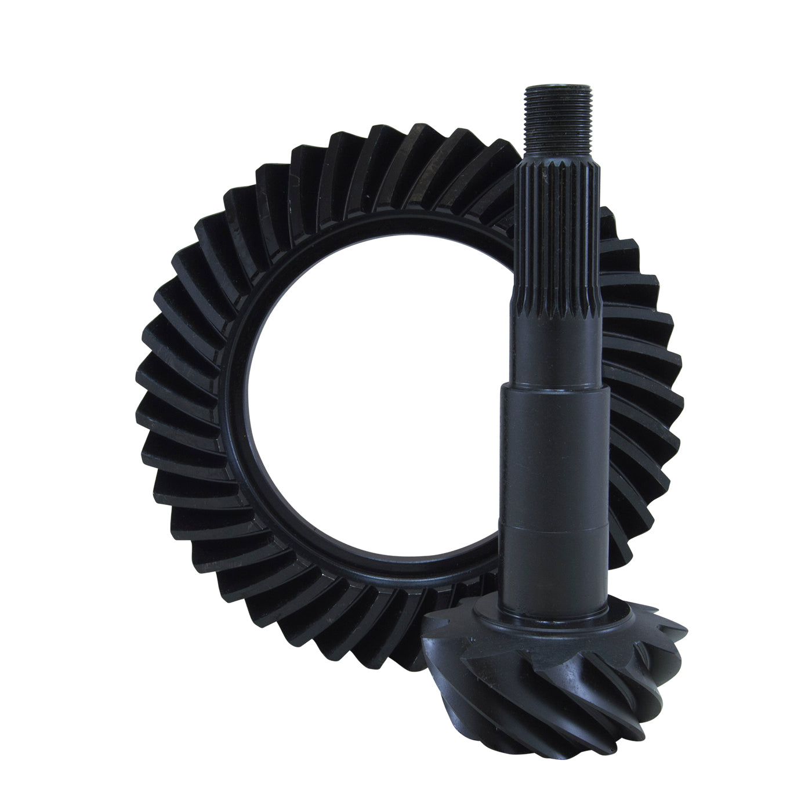
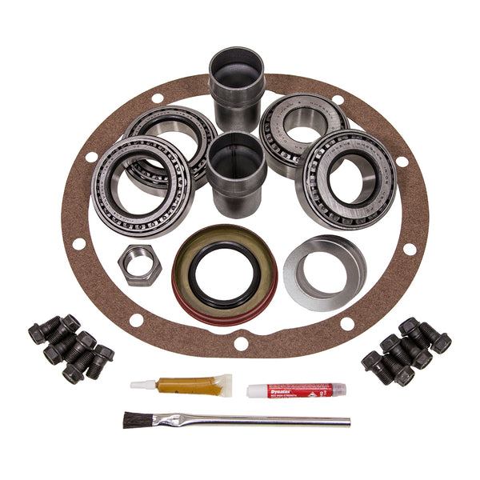

Yukon Dura Grip for GM 9.5”
YDGGM9.5-33-1
Yukon Dura Grip positraction unit for GM 9.5-inch rear axle applications with 33-spline axles.
Call for Availability
Search our stock of hard-to-find drivetrain components. Call for the latest availability and compatibility help.
YDGGM9.5-33-1
Yukon Dura Grip positraction unit for GM 9.5-inch rear axle applications with 33-spline axles.

YDGGM12P-3-30-1
Yukon Dura Grip positraction for GM 12-bolt passenger car rear ends with 30-spline axles.

ZG GM55P-355
USA Standard Gear ring and pinion set for GM Chevy 55P differentials in a 3.55 gear ratio.

YPKGM55P-P/L-17
Yukon Power Lok positraction internal parts for GM 55P units with 17-spline axles.

ZG GM12P-373
USA Standard Gear ring and pinion gear set for GM 12-bolt passenger car rear ends.

ZK GM55CHEVY
USA Standard master overhaul kit for GM Chevy 55P and 55T differential rebuilds.